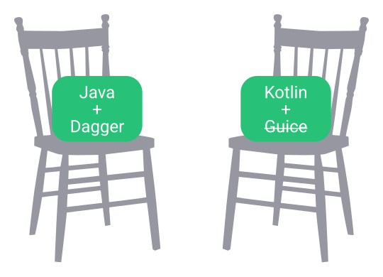
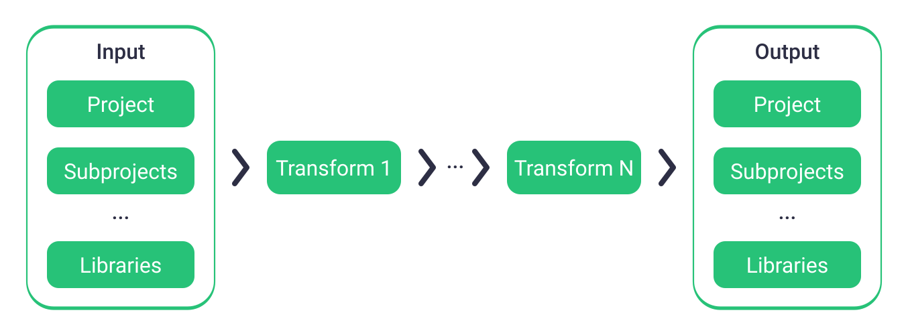

Кодогенерация без kapt
Михаил Розумянский, Joom
Начало
2014 год
Новый проект
Kotlin M8
Выбор DI
Есть два стула
Lightsaber
Вдохновлён Guice
Compile time
Меняет байткод
Lightsaber
Компонент
@Component
private class MainComponent {
@Provides
private fun provideMainModule() = MainModule()
@Module
private class MainModule {
@Provides
private fun provideMainRepository(impl: MainRepositoryImpl): MainRepository = impl
}
}
Lightsaber
Использование
class MainActivity : BaseActivity() {
private val repository: MainRepository = notNull()
override fun onCreate(savedInstanceState: Bundle?) {
super.onCreate(savedInstanceState)
val injector = lightsaber.createInjector(MainComponent())
injector.injectMembers(this)
}
}
Lightsaber
Изнутри
ObjectWeb ASM
Transform API
ASM

Transform API
kapt
Kotlin ❤️ APT
kapt
Возможные реализации
Своя реализация JSR 269
kapt2
Компиляция в .java стабы
kapt3
Компиляция в .class стабы
kapt1
kapt
Изнутри
¯\_(ツ)_/¯
Sento
Как ButterKnife
Только без APT
Больше не используется
Sento
Использование
class MainActivity : BaseActivity() {
private @Bind(R.id.label) val label: TextView = notNull()
override fun onCreate(savedInstanceState: Bundle?) {
super.onCreate(savedInstanceState)
setContentView(R.layout.main_activity)
Sento.bind(this, this)
}
@OnTextChanged(R.id.input)
private fun onInputChanged(text: CharSequence) {
label.text = getValidationMessage(text)
}
}
Спустя некоторое время
DataBinding
Ожидание
Удобство
Надёжность
Стабильность
VectorDrawableCompat
ViewDataBinding.java
protected static Drawable getDrawableFromResource(View view, int resourceId) {
if (Build.VERSION.SDK_INT >= Build.VERSION_CODES.LOLLIPOP) {
return view.getContext().getDrawable(resourceId);
} else {
return view.getResources().getDrawable(resourceId);
}
}
DataBindingCompat
ViewDataBinding.java
protected static Drawable getDrawableFromResource(View view, int resourceId) {
return AppCompatResources.getDrawable(view.getContext(), resourceId));
}
Smuggler
Генерация Parcelable
Для Kotlin
Опять без APT
Smuggler
Использование
sealed class Selection : AutoParcelable {
data class Item(val id: String) : Selection()
object None : Selection()
}
Много схожего кода
Grip
Часть Lightsaber
DOM для классов
Поисковые запросы
Grip
Использование
grip select methods from inputs where
(isConstructor() and annotatedWith(Types.INJECT_TYPE))
Grip
Использование
grip
.select(methods)
.from(inputs)
.where(isConstructor() and annotatedWith(Types.INJECT_TYPE))
Paranoid
Обфускатор строк
Демо проект
Paranoid
Использование
@Obfuscate
object TopSecretStrings {
const val TOP_SECRET_STRING = "42"
}
А тем временем
kapt2

(спешит на помощь)
kapt2
Что случилось?
Обёртки для PSI
Медленно и тяжело
Что с Java?
kapt3
Как kapt1, но лучше
kapt3
Изнутри

Colonist
Регистрация плагинов
Compile time
Слабая связность
Colonist
Colonist
Пример API
@Colony
@SelectSettlersBySuperType(Feature::class)
@ProduceSettlersAsClasses
@AcceptSettlersViaCallback
annotation class FeatureColony
Colonist
Использование
class MyFeature : Feature { /* ... */ }
@FeatureColony
private class FeatureManager {
init {
Colonist.settle(this)
}
@OnAcceptSettler(colonyAnnotation = FeatureColony::class)
fun onAcceptFeature(featureClass: Class<out Feature>) {
// ...
}
}
Leak Detector
Проверяет, что
Closeable объекты
были закрыты
до сборки мусора
Leak Detector
Изнутри

Прощай kapt
Предпосылки
Только DataBinding
BR не используется
Медленная сборка
DataBinding
Изнутри
- В коде используются *Binding
- *Binding.java генерируются до компиляции
-
*BindingImpl.java генерируются APT
А также BR и DataBindingComponent
DataBinding
Идея
Отключить процессор DataBinding
Собрать проект
Запустить процессор DataBinding
DataBinding
Итоги
-20% от времени сборки
Нет неожиданных деградаций
Решение не универсальное
Что дальше?
Compose вытеснит DataBinding
И многое изменит
kapt не будет first-class citizen
А Kotlin будет
Kotlin-плагины заменят Transform API
И, возможно, kapt
Планы
Объединение трансформаций
Парсинг диплинков
Отправка аналитики
Сетевой клиент
Патчи в проекте
Полезные ссылки
-
ASM
https://asm.ow2.io -
Transform API
http://google.github.io/android-gradle-dsl/javadoc/current -
kapt: Annotation Processing for Kotlin
https://blog.jetbrains.com/kotlin/2015/05/kapt-annotation-processing-for-kotlin -
Implement Annotation Processing API (JSR 269) natively in Kotlin
https://youtrack.jetbrains.com/issue/KT-13499 -
Pushing the limits of Kotlin annotation processing
https://medium.com/@workingkills/pushing-the-limits-of-kotlin-annotation-processing-8611027b6711
Не очень полезные ссылки
-
Lightsaber
https://github.com/MichaelRocks/lightsaber -
Sento
https://github.com/nsk-mironov/sento -
Smuggler
https://github.com/joomcode/smuggler -
DataBindingCompat
https://github.com/MichaelRocks/DataBindingCompat -
Grip
https://github.com/MichaelRocks/grip -
Paranoid
https://github.com/MichaelRocks/paranoid -
Colonist
https://github.com/MichaelRocks/colonist